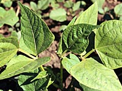

What are pinto beans?
Pinto beans (also called dry bean) are a pulse crop.
They were developed as a cultivated crop by the indigenous peoples in the central
American and Andean zones. The scientific name for dry bean is (Phaseolus vulgaris)
About 40% of the nearly 2,000,000 acre North American dry bean crop are classified as "Pinto".
The crop is both exported and domestically consumed.
Why produce it?
Pinto bean are consumed as human food in many
countries. Like other pulse crops, it is high in protein, phosphorus, iron, vitamin B1, fiber and, low in cholesterol.
Where is it produced? At present, Brazil is the largest dry-bean producing country
in the world. The major dryland production for pinto bean is North Dakota. In
Canada, dryland production is centered in southern Manitoba, and the plant has been produced in western Canada since the 1920's. In Saskatchewan, dryland pinto bean production is in the very early stages of development under irrigation in the Lake Diefenbaker area.
How much is produced?
Dry bean acreage has increased from less than 5,000 acres in 1970 to over 80,000 acres in 1995. The predicted acreage in Western Canada for dry bean in the year 2000 is 160,000. As with other crops, changes are being made (such as better varieties, adaptations of machinery, variations in inoculating procedures, growing by contract) to increase the success of production of the pinto bean in Western Canada.
What does it look like?
Dry bean is a herbaceous annual and has both bush and viny flowering habit types. Flowers are present for 5 to 6 days (or longer depending on plant type) and color ranges from white to pink to purple. The seeds of dry bean vary greatly in shape, ranging from round, elliptical and somewhat flattened to rounded-elongate and have a variety of seed coat colors and patterns.
The plant takes 60 to 65 days to mature in warm climates and up to 150 days to mature for the long-season types.
How is it produced?
Pinto bean is seeded like lentils: onto summerfallow. Experienced lentil growers in the dark brown soil zone with hoedrills and flex header/air reel harvesting systems can handle pinto bean production without additional investment in machinery.
Pinto bean
- is killed by frost at all stages of growth.
- requires more water than lentil.
- is very sensitive to salinity.
- is seeded into a warm, moist soilbed between May 20 and May 27 when soil is warm.
- should be inoculated with dry bean strain of Rhizobium (to fix nitrogen).
- emerges in 6-12 days depending on soil temperature.
- is sensitive to herbicides so avoid fields that have had herbicides with residue characteristics.
- is harvested when leaves have fallen off and most pods are dry.
- harvest occurs (normally) in mid-September.
|